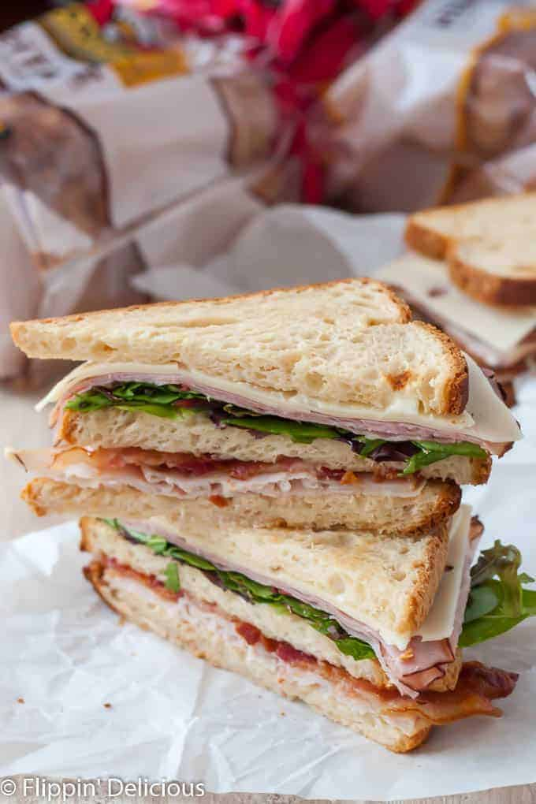

Gluten-Free Club Sandwich Recipe

Description
Sometimes you need a super quick meal to fill up your screaming stomach.
Satisfy your hunger with this club sandwich!
Follow along on the original website Flippin-delicious.
Ingredients
- 3 slices Canyon Bakehouse Heritage Style Gluten Free Bread
- 1 tablespoon Mayo
- 2 slices smoked turkey deli meat
- 2 slices bacon, cooked
- 2 slices black forest ham deli meat
- handful spring mix or other lettuce/greens
- 2 slices swiss cheese
Steps
- Lightly toast the bread.
- Lightly spread one side of the toasted bread with mayo and top with turkey and bacon. Top it with another piece of bread with mayo spread on BOTH sides.
- Layer spring mix, ham, and swiss followed by another piece of bread spread with mayo.
- Cut in half on the diagonal and take a big bite.
- Enjoy and Share!